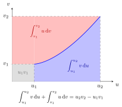

curriculum-current
m1c-lecture12
Integration by Parts
Let f f f g g g differentiable functions on [ a , b ] [a, b] [ a , b ] f ′ f' f ′ g ′ g' g ′ Riemann integrable . Then:
∫ a b f ( x ) g ′ ( x ) d x = f ( b ) g ( b ) − f ( a ) g ( a ) − ∫ a b f ′ ( x ) g ( x ) d x , \begin{aligned}
&\int_a^b f(x)g'(x)\,\mathrm{d}x\\
&\quad=f(b)g(b)-f(a)g(a)\\
&\qquad-\int_a^b f'(x)g(x)\,\mathrm{d}x,
\end{aligned} ∫ a b f ( x ) g ′ ( x ) d x = f ( b ) g ( b ) − f ( a ) g ( a ) − ∫ a b f ′ ( x ) g ( x ) d x , or
∫ a b f ( x ) d g ( x ) = f ( b ) g ( b ) − f ( a ) g ( a ) − ∫ a b g ( x ) d f ( x ) . \begin{aligned}
\int_a^b f(x)\,\mathrm{d}g(x) &=f(b)g(b)-f(a)g(a)\\
&\quad-\int_a^b g(x)\,\mathrm{d}f(x).
\end{aligned} ∫ a b f ( x ) d g ( x ) = f ( b ) g ( b ) − f ( a ) g ( a ) − ∫ a b g ( x ) d f ( x ) . If we consider the indefinite integral , we get:
∫ f d g = f g − ∫ g d f + C . \int f\,\mathrm{d} g = fg -\int g\,\mathrm{d} f+C. ∫ f d g = f g − ∫ g d f + C . Integration by parts transfers derivatives between functions inside an integral.
It is based on the product rule and is used to simplify integrals involving products.

Integration by parts follows directly from the product rule.
The method can be applied to both definite and indefinite integrals.
Appropriate choice of functions is essential for simplification.
Choose f ( x ) = x f(x)=x f ( x ) = x g ′ ( x ) = e x g'(x)=\mathrm{e}^x g ′ ( x ) = e x f ′ ( x ) = 1 f'(x)=1 f ′ ( x ) = 1 g ( x ) = e x g(x)=\mathrm{e}^x g ( x ) = e x ∫ x e x d x = x e x − e x + C = ( x − 1 ) e x + C \int xe^x\,\mathrm{d}x=xe^x-\mathrm{e}^x+C=(x-1)\mathrm{e}^x+C ∫ x e x d x = x e x − e x + C = ( x − 1 ) e x + C
The integral ∫ 0 1 x 2 ln x d x \int_0^1x^2\ln x\,\mathrm{d}x ∫ 0 1 x 2 ln x d x [ ε , 1 ] [\varepsilon,1] [ ε , 1 ] f ( x ) = ln x f(x)=\ln x f ( x ) = ln x g ( x ) = x 3 / 3 g(x)=x^3/3 g ( x ) = x 3 /3
∫ ε 1 x 2 ln x d x = [ x 3 ln x 3 ] ε 1 − 1 3 ∫ ε 1 x 2 d x . \int_\varepsilon^1x^2\ln x\,\mathrm{d}x
=\left[\frac{x^3\ln x}{3}\right]_\varepsilon^1-\frac13\int_\varepsilon^1x^2\,\mathrm{d}x. ∫ ε 1 x 2 ln x d x = [ 3 x 3 ln x ] ε 1 − 3 1 ∫ ε 1 x 2 d x . Since ε 3 ln ε → 0 \varepsilon^3\ln\varepsilon\to0 ε 3 ln ε → 0 ε ↓ 0 \varepsilon\downarrow0 ε ↓ 0 − 1 / 9 -1/9 − 1/9
Math I: Calculus · Lecture 12
Aliases: IBP, partial integration
Symbols: epsilon, integral
Last updated: 8 October 2026 18:38
Integration by Parts Differential Differentiation Rules Definite Integral Indefinite Integral Integration by Substitution Type 1 Integration by Substitution Type 2 Antiderivative